User Guide
Agentic QA Connect
What is what
Two things are involved, and this guide names them the same way throughout:
Agentic QA installation
The web platform you open in the browser. You create test sessions and pair machines there.
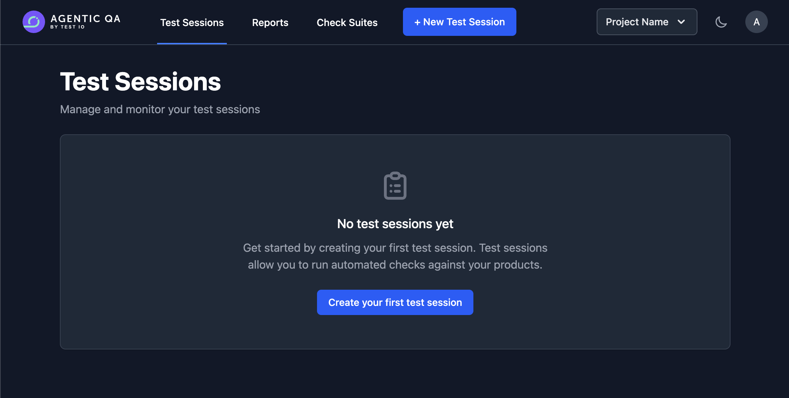
Agentic QA Connect app
The desktop app you install on the machine the tests should run on.
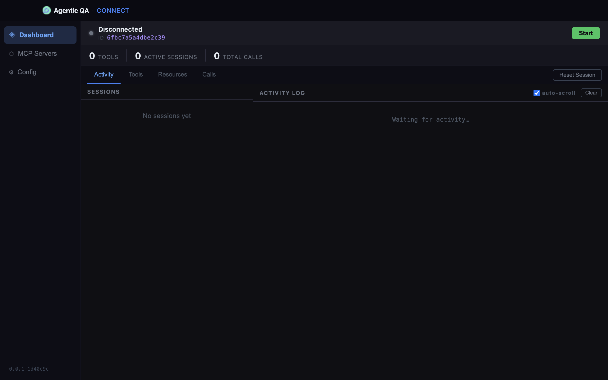
Install and launch the app
Download the app from connect.testinator.ai — the page offers the build for your OS (and your Mac's chip) — install it like any other desktop app, and launch it. Once installed, the app keeps itself up to date (see Updates).
Windows
Download Agentic-QA-Connect-Setup-win-x64.exe
and run it.
Windows: run the installer
-
Choose Installation Options — pick
Only for me. It needs no administrator rights,
while Anyone who uses this computer installs into
Program Filesand asks for them.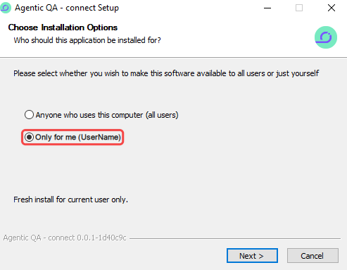
Only for me installs the app for your Windows account only. -
Choose Install Location — keep the suggested
folder or pick another one, then click Install.
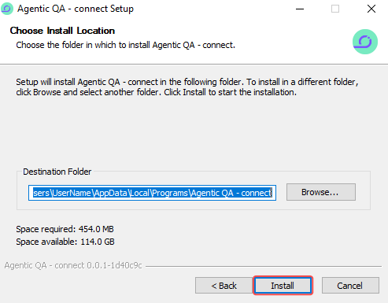
The suggested folder is under AppData\Local\Programsof your account. -
When setup is complete, leave Run Agentic QA - connect
ticked and click Finish.
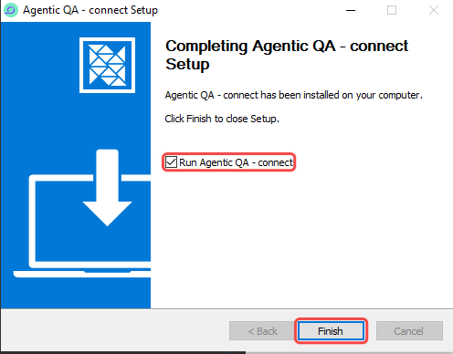
Finish closes the installer and starts the app.
macOS
Download the .dmg for your Mac —
Agentic-QA-Connect-mac-arm64.dmg for Apple silicon,
Agentic-QA-Connect-mac-x64.dmg for Intel — and open it.
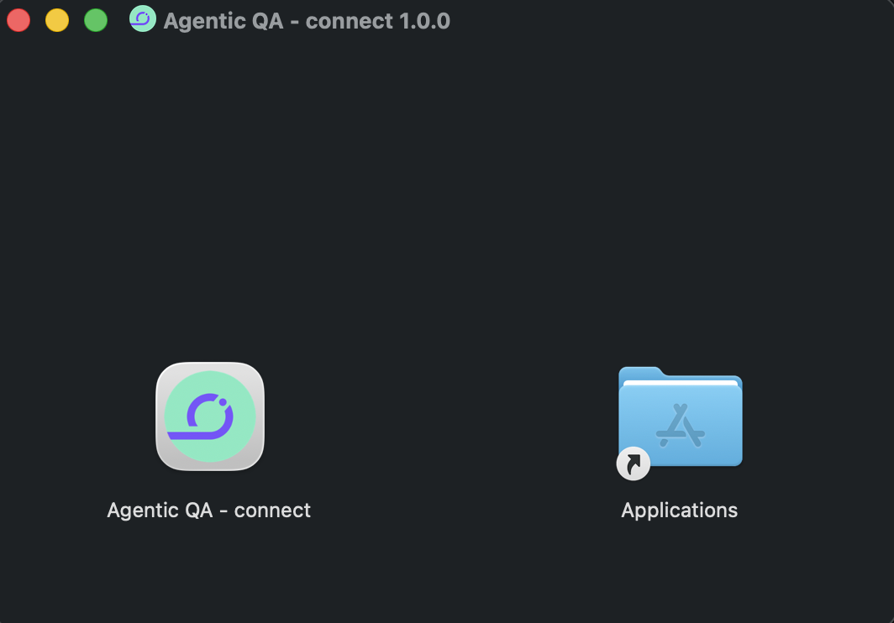
Connect it to your installation
Everything happens on one page of the installation: open the account menu (your avatar, top right) → User Settings → the Agentic QA Connect tab. Every user has it; the tab appears once Agentic QA Connect is enabled on the installation. Its Get the app ↗ button opens the download page if the app isn't installed yet. Connect the machine automatically with one click, or manually when the one-click link can't reach the app.
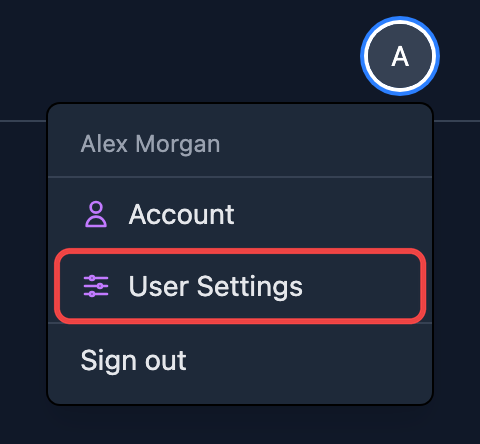
Recommended: one click in the installation, nothing to copy by hand.
- Make sure the app is installed and running on the machine you're sitting at, and open the installation in a browser on that same machine.
-
Click Connect app next to the Deployment URL. The
browser asks whether it may hand the
agentic-qa-connect://link to the app — confirm, and the app comes to the foreground.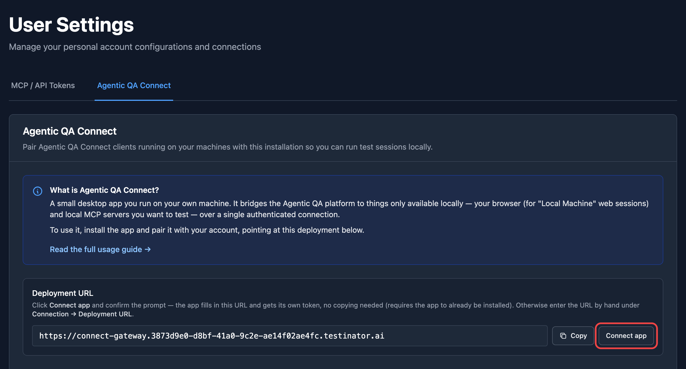
User Settings → Agentic QA Connect: Connect app sits next to the Deployment URL. 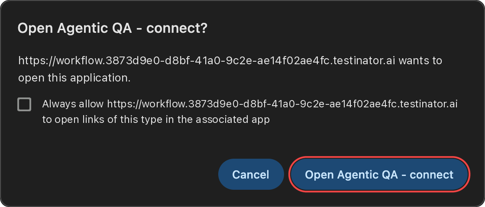
The browser asks first: click Open Agentic QA - connect. -
The app asks "Connect this machine to <your installation>?".
Click Connect. Nothing is applied until you confirm —
a deep link can be triggered by any web page, so the app never
reconfigures itself silently.
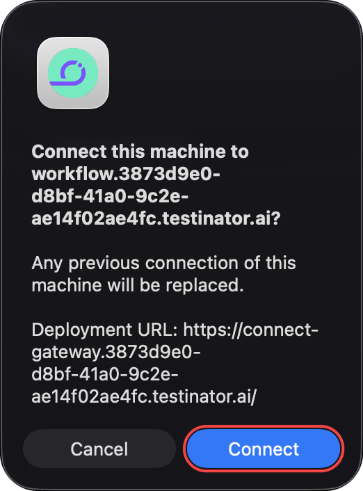
The app names the installation and the Deployment URL it is about to save. 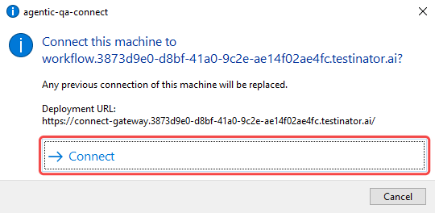
The app names the installation and the Deployment URL it is about to save. On Windows, Connect is the large option with an arrow.
That's it: the app fills in the Deployment URL, trades the one-time code from the link for its own handshake token, saves the configuration and starts connecting. Nothing is copied by hand.
Use this when the app runs on a different machine than the browser, or the one-click link doesn't reach it.
-
Copy the Deployment URL from the
Agentic QA Connect tab in User Settings and paste
it into the app under
Config → Connection → Deployment URL.
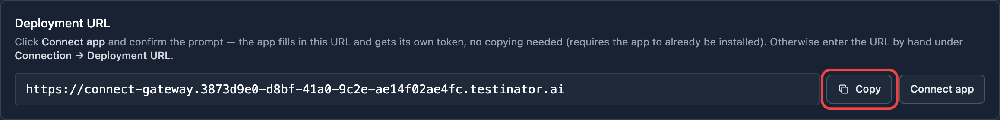
In the installation: Copy next to the Deployment URL. 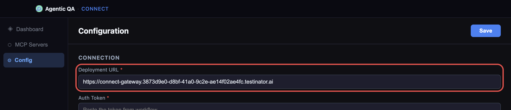
In the app: paste it into Config → Connection → Deployment URL. -
Copy the Client ID from the top of the app's
Dashboard, paste it into Pair by Client ID on the
same tab and click Pair.
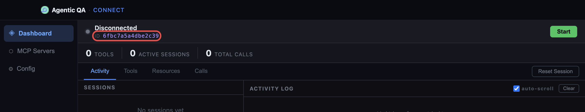
The Client ID sits next to the status indicator — click it to copy. 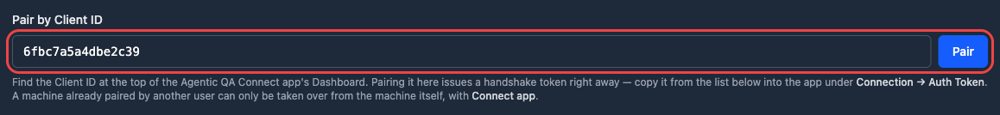
Paste the same Client ID here and click Pair. -
A new row appears under Paired clients with its
handshake token already issued — click Copy.
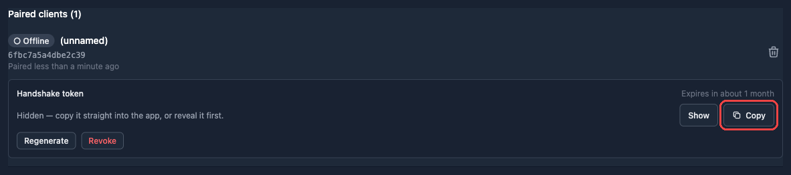
Pairing issues the token right away. The machine stays Offline and unnamed until the app connects. -
Paste it into the app under
Config → Connection → Auth Token and click
Save.
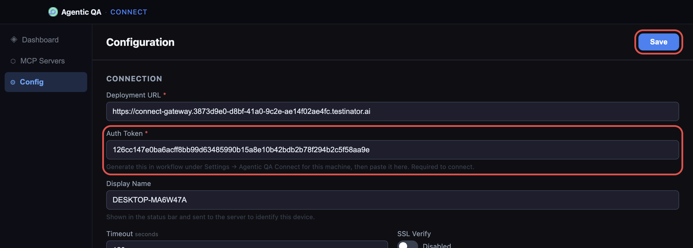
Deployment URL and Auth Token are both required; Save is in the top-right corner. - Back on the Dashboard, click Start.
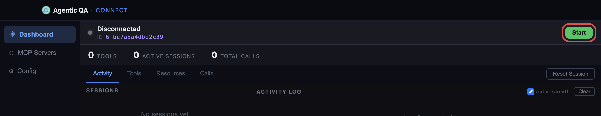
About the handshake token
The token is what the installation checks when the app connects — without a valid one the connection is refused, no matter what the Deployment URL says. A few things worth knowing:
- It is personal and per-machine, and it expires after one month; the paired row shows how long is left.
- Regenerate issues a new one and kills the old one immediately — paste the new value into the app.
- Revoke stops this machine connecting until you issue a new token.
- A machine belongs to exactly one user, so a handed-over laptop always has a single owner and a single live token. To take over a machine someone else paired, use Connect app on that machine: pairing by Client ID is refused while the machine belongs to another user.
- Deleting a user's account removes their pairings and tokens: the machines they paired stop connecting until someone pairs them again.
Check that it is online
In the app, the status bar flips to Connected and shows the Deployment URL it reached. On the installation, the row under Paired clients shows a green ● Online badge. The badge is driven by a heartbeat, so a machine that dies without disconnecting cleanly turns ○ Offline after about ten minutes.
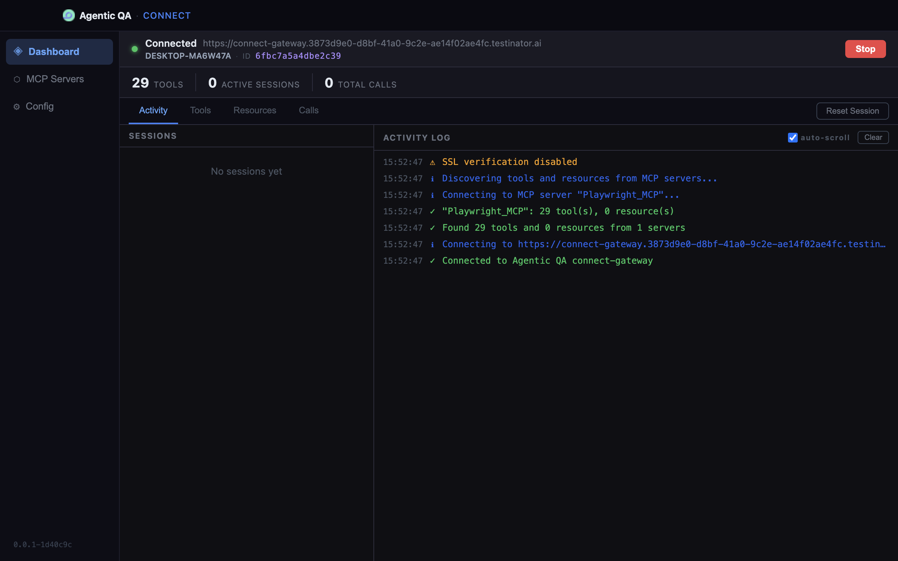
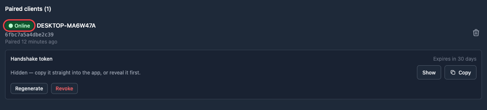
Display Name (Config → Connection) is what the installation labels your machine with in the client dropdowns; leave it empty and the app sends the machine's hostname.
Updates
The app updates itself. It checks for a new version when it starts and every few hours, and downloads it in the background while you keep working. The current version is shown at the bottom of the app's sidebar; above it, the app shows what the updater is doing:
- Checking for updates… / Up to date — nothing to do.
- Downloading <version> · NN% — the new version is on its way.
- Version <version> is ready with a Restart to update button — click it to install now; the app restarts on the new version. If you don't, the update installs the next time you quit the app.
- Update check failed — usually no network; hover it for the reason and click Check again. A version that was already downloaded stays ready.
Troubleshooting
| Symptom | Likely cause | What to try |
|---|---|---|
App sits on "Connecting…", log says Cannot reach … |
Wrong Deployment URL, the installation isn't reachable, or a self-signed certificate with SSL Verify on. | Re-check the URL against the Agentic QA Connect tab in User Settings; for a development installation turn SSL Verify off. |
| Connects, then drops immediately | The handshake token is missing, expired or revoked — the installation refuses the connection. | Regenerate the token on the paired row and paste it into Config → Connection → Auth Token. |
| The app shows Connected, but the installation says Offline | The machine is paired to a different account, or the row you're looking at belongs to another Client ID. | Compare the Client ID in the app's status bar with the one on the paired row; re-pair if they differ. |
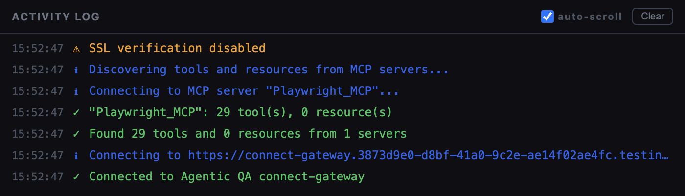
What will you test?
Pick one, and its steps appear below.
Testing a native Windows application needs the Connect app on a Windows machine: switch the operating system to Windows in the sidebar.
Set up the browser
A fresh install already carries a built-in
Playwright_MCP server — that's the one
Local Machine web sessions drive, and you configure it
from Config → Playwright MCP (browser, capabilities,
headless, emulated device, viewport). Use the
Install button there once per browser: Playwright needs
its own browser binaries.
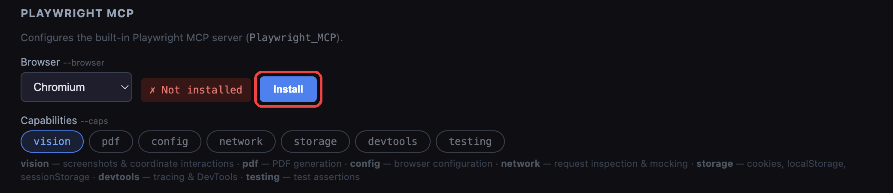
Playwright_MCP must stay
stateful for web sessions to get a browser.
Run a web session
In the test-session form, under Where to Test, pick Local Machine as the Browser. The Connected client dropdown then lists your paired and currently-online machines.
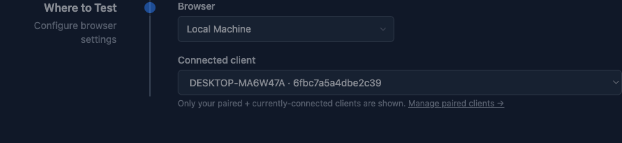
Pick a client
If your machine isn't listed, it's offline — start the app there and the dropdown updates by itself, no page reload needed.
Run the session
Run checks the usual way. Playwright opens on the chosen machine; you can watch the browser locally while the installation streams steps and verdicts.
Playwright_MCP configuration in
the app instead (Config → Playwright MCP).
Add your MCP servers
Your own servers live on the MCP Servers tab of the app. Each card is one server:
- Name — what the server is called in the installation's pickers. Only letters, digits and
_survive; anything else is rewritten. - Type —
stdio(a local process),httporsse(a URL). - Command + Args for
stdio; URL + Headers (JSON) for the other two. - Stateful — keeps one live MCP connection per test session instead of reconnecting per call.
- Test — connects right there and reports how many tools it found, before you involve the installation.
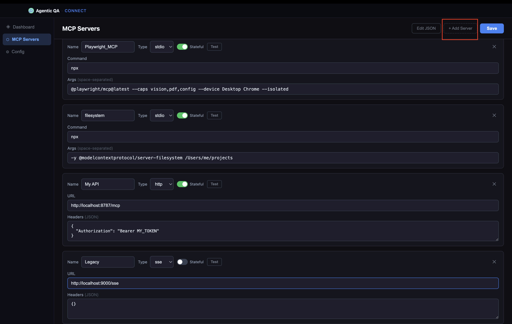
Edit JSON shows the same thing as a file. The shape is:
{
"deployment_url": "https://connect-gateway.your-installation.testinator.ai",
"auth_token": "…",
"timeout": 120,
"ssl_verify": false,
"display_name": "DESKTOP-MA6W47A",
"servers": {
"Playwright_MCP": {
"type": "stdio",
"command": "npx",
"args": ["@playwright/mcp@latest", "--caps", "vision", "--isolated"],
"stateful": true
},
"my_api": {
"type": "http",
"url": "http://localhost:8787/mcp",
"headers": { "Authorization": "Bearer MY_TOKEN" },
"stateful": true
},
"legacy_thing": {
"type": "sse",
"url": "http://localhost:9000/sse"
}
}
}Tokens, paths and process commands never leave your machine — the installation only ever sees the tool calls and the list of tools each server advertises.
Run a Desktop App session
To test the MCP servers themselves, create a test session for a product of type Desktop App. There is no "What to Test" URL list here — Where to Test covers both the machine and what runs on it.
No such product yet? Create one under Admin → Products → New with Product Type set to Desktop App. The type is listed only when Agentic QA Connect is enabled on the installation.
- Pick the Connected client.
- Pick one or more MCP server cards. Each card shows how many tools and resources that server advertises.
- Narrow down the Tools and Resources chips if you don't need all of them — the form warns you if you turn every tool off, because the agent then has nothing to work with.
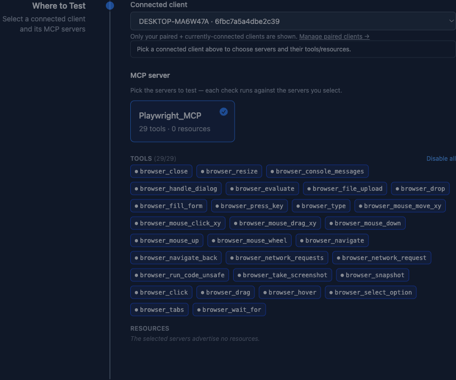
Prepare the machine
Test a native Windows application on your own Windows machine: the
agent sees the screen and drives the mouse and keyboard through the
windows_mcp server in the app.
- Windows 10 or 11, x64, with the app installed and connected — see Installation.
- A logged-in, unlocked desktop for the whole run. A locked screen or a disconnected Remote Desktop session stops every click and keystroke — turn off the screen saver and the automatic lock.
- Don't use the mouse or keyboard while checks run. The agent shares them with you, and anything you click moves the application out from under it.
- The application under test shouldn't run as administrator: Windows doesn't let a regular process control elevated windows. If it has to run elevated, start the Agentic QA Connect app as administrator as well.
- Set the Windows display language to English.
- Run one session per machine at a time — two sessions would fight over the same screen.
windows_mcp tool, including
PowerShell, Registry and
FileSystem, which act with your Windows account's rights.
Use a machine set aside for testing, not your everyday workstation.
Add the windows_mcp server
In the app, open MCP Servers → + Add Server, fill it in exactly like this and click Save:
| Field | Value |
|---|---|
| Name | windows_mcp |
| Type | stdio |
| Stateful | on |
| Command | uvx |
| Args | windows-mcp@0.8.5 serve |
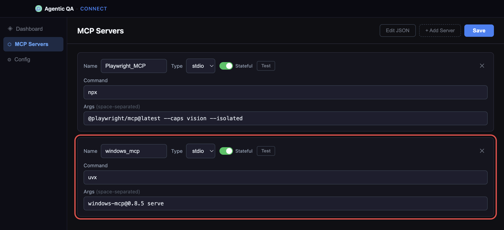
windows_mcp server card: Stateful on, command uvx, args windows-mcp@0.8.5 serve.-
Use exactly this name. The installation finds the
driver by it: a server called
Windows_MCPisn't recognised, and the session form finds no driver on the machine. - Keep Stateful on. Without it every single click starts the server from scratch.
-
Keep the exact version in Args. With
@latestthe server looks for a new release on every start and downloads it when there is one, so a session can fail to start at a random moment. - Nothing else to install:
uvxruns through the copy ofuvthat ships with the app.
Test the server
Click Test on the windows_mcp card. A working
server reports how many tools it found. Then click Stop
and Start on the Dashboard so the installation sees it.
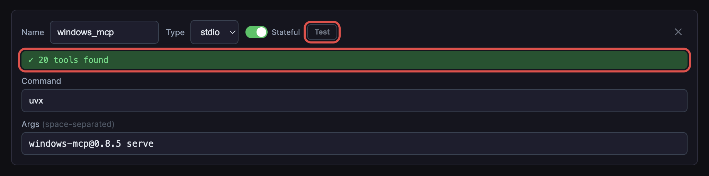
MCP error -32001: Request timed out, follow
the fix in Troubleshooting.
Create a Desktop App Windows product
In the installation, open Admin → Products → New, name the product and set Product Type to Desktop App Windows. The type is listed only when Agentic QA Connect is enabled on the installation.
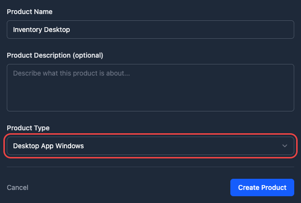
Run a Windows session
Create a test session for that product — the Windows MCP Test Workflow is picked for you. Under Where to Test:
- Connected client — your machine.
-
Driver —
windows_mcp. It's offered only when the selected machine's app has a server with that name. - App to launch (optional) — the application's name as it appears in the Start menu; it's launched at the start of every check. Leave it empty to run the checks against whatever is already open, for example an application you started by hand or a Remote Desktop window.
Setup Notes are optional too: the agent gets them with every check, so use them for anything it should know about the machine or the application.
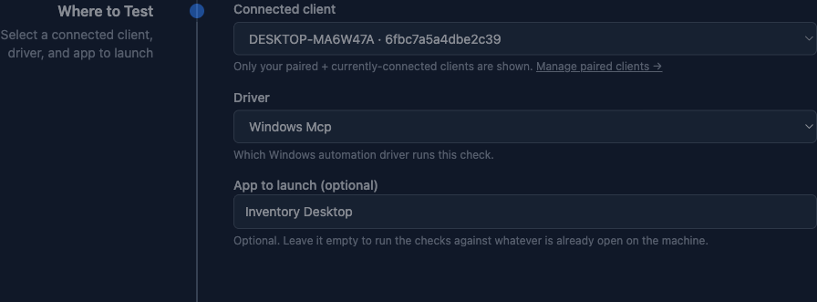
Troubleshooting
Start with the Activity log on the app's Dashboard: it records server discovery, connection and every tool call.
Log says Failed to discover from "windows_mcp": MCP error -32001: Request timed out
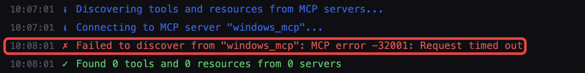
On its first start the server downloads Python and the
windows-mcp package, about 50 MB, and doesn't answer within
the minute the app waits for it. Download everything once by hand:
after that the server starts in seconds.
Fix: warm the server up with the app's own uv
-
Open PowerShell and run:
$uv = Get-ChildItem "$env:LOCALAPPDATA\Programs\*\resources\uv-windows-x64.exe", "$env:ProgramFiles\*\resources\uv-windows-x64.exe" -ErrorAction SilentlyContinue | Select-Object -First 1 & $uv.FullName tool run windows-mcp@0.8.5 serve -
Wait until it prints its start-up output and sits waiting, then press
Ctrl+C. If you installed the app into another folder,
use the
uv-windows-x64.exefrom itsresourcesfolder. -
In the app, click Test on the
windows_mcpcard — it now reports the tool count — then Stop and Start on the Dashboard.
If that didn't help: install uv and warm up with it
-
Install uv with its official installer. If your organisation blocks
scripts from the internet, ask IT to install uv instead.
powershell -ExecutionPolicy ByPass -c "irm https://astral.sh/uv/install.ps1 | iex" -
Open a new PowerShell window, so it picks up uv, and run
the command below. When it prints its start-up output, press
Ctrl+C.
uvx windows-mcp@0.8.5 serve - Click Test in the app again, then Stop and Start.
The app still runs the server with its own copy of uv; the warm-up only downloads what the server needs in advance.
$env:HTTPS_PROXY = "http://proxy.example.com:8080": the app
doesn't pass proxy settings on to the server's first download.
| Symptom | Likely cause | What to try |
|---|---|---|
| "You haven't paired any Agentic QA Connect clients" | This account has no client of its own yet. | User Settings → Agentic QA Connect → Connect app, or pair by Client ID. |
| "None of your paired clients are currently connected" | The pairing exists, but no paired machine is online. | Start the app on one of the listed machines and press Start; the form updates live. |
| A server is missing from the MCP server cards | The entry wasn't saved, or the app connected before it was added. | Save it on the MCP Servers tab, hit Test, then Stop → Start and re-create the session. |
| Local Machine session starts but no browser opens | Playwright_MCP isn't marked Stateful, or the browser binary isn't installed. |
Turn Stateful on for it; use Install under Config → Playwright MCP. |
A tool reports that the network capability is not enabled |
The Playwright MCP server was started without that capability. | Config → Playwright MCP → Capabilities → enable network, then reconnect. |
400 INVALID_ARGUMENT from the model on a session run |
Too many tools selected → the schema is too large for the model. | Toggle off tools you don't need for this check. |
| A Windows session says "No supported driver detected on this client" | The server isn't named exactly windows_mcp, or the app connected before it was added. |
Rename it to windows_mcp, Save, then Stop → Start in the app. |
A Windows check is blocked with a transport error during Snapshot |
The application under test stopped responding, or the screen got locked. | Keep the desktop unlocked and hands off; restart the application and run the session again. |